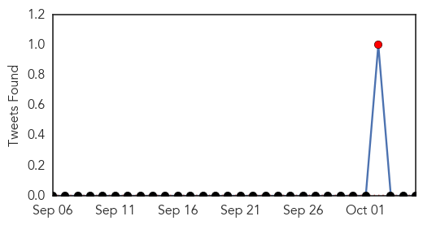
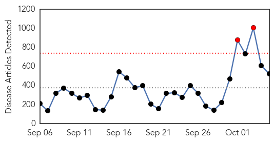
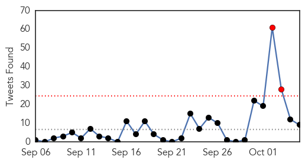
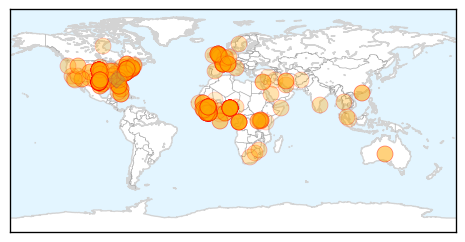

Yellow Fever
30-Day Web Trend
0 alerts, 0 warnings

30-Day Twitter Trend
1 alerts, 0 warnings

Article Locations

Article Confidences

Top Articles:
-
No articles found for Oct 05, 2014
Top Tweets:
-
No tweets found for Oct 05, 2014
Ebola
30-Day Web Trend
2 alerts, 0 warnings

30-Day Twitter Trend
1 alerts, 0 warnings

Article Locations
Article Confidences

Top Articles:
- 1.000
- People scared, but outbreak unlikely
- 1.000
- It’s highly unlikely that you’ll become infected with Ebola. So what are you so afraid of?
- 1.000
- Local health experts prep for Ebola
- 1.000
- High risk Ebola could reach France and UK by end-Oct, scientists calculate
- 1.000
- Two health workers in W. Africa cured of Ebola in Europe
- 1.000
- Ebola threat in US, and we're not prepared to contain it, experts warn
- 1.000
- SGGP English Edition- Ministry asks local gov’t to watch out for Ebola
- 1.000
- Aid workers ask where was WHO in Ebola outbreak?
- 1.000
- CHRONOLOGY-Worst Ebola outbreak on record tests global response
- 1.000
- Ebola outbreak is nearing possible end in Nigeria -- ATLANTA, Sept. 30, 2014 /PRNewswire-USNewswire/ --
- 1.000
- The facts about Ebola
- 1.000
- Ebola Patient in Dallas Hospital Takes Turn for Worse
- 1.000
- Anxiety rising in U.S., but expert says Ebola outbreak 'extraordinarily unlikely'
- 1.000
- French Ebola Patient Recovers
- 1.000
- Ugandan doctor with Ebola named
- 1.000
- High Risk Ebola Could Reach France and UK by End-Oct, Scientists Calculate
- 1.000
- Ebola in Dallas: What We Know About Thomas Duncan, 1st Ebola Case Diagnosed in U.S.
- 1.000
- How the world’s health organizations failed to stop the Ebola disaster
- 1.000
- State health officials: Maryland is prepared to respond to ebola
- 1.000
- now back in hospital amid fears it's returned
- 1.000
- Officials: 9 people directly exposed to Texas Ebola patient
- 1.000
- From Ebola to enterovirus-D68, don't panic and keep hand-washing
- 1.000
- Patient Has 'Taken a Turn for the Worse'
- 1.000
- From Guinea to Dallas: Tracing the Ebola threat
- 1.000
- Ebola could reach France and UK in weeks, scientists warn
- 1.000
- Ebola Outbreak In Dallas May Be Contained
- 1.000
- US Patient Thomas Eric Duncan 'In Critical Condition'
- 1.000
- Ebola could reach France, UK by month’s end
- 1.000
- U.S. and airlines consider new screenings for Ebola, no travel ban
- 1.000
- Ebola: Everything You Need to Know -- The Motley Fool
- 1.000
- French Ebola Patient Cured; Duncan 'Critical'
- 1.000
- Aid workers ask where was WHO in Ebola outbreak?
- 1.000
- Fears of Ebola spread as US patient fights for his life
- 1.000
- How the world let Ebola spread
- 1.000
- Ebola could hit UK 'within three weeks', scientists warn
- 1.000
- 100 potential Ebola victims reported by hospitals on high alert for deadly virus
- 1.000
- Did WHO underestimate Ebola crisis?
- 1.000
- 100 possible Ebola cases assessed in US, and one is confirmed
- 1.000
- Ebola Patient Fights for Life as Contacts are Monitored
- 1.000
- Seeking a better Ebola vaccine at UNM
- 1.000
- U.S. working on new screenings for Ebola but no travel ban
- 1.000
- High risk Ebola could reach France and UK by end-October, scientists calculate
- 1.000
- Ebola in U.S.: People scared, but outbreak unlikely
- 1.000
- People are scared, but an outbreak still unlikely
- 1.000
- Former KPIX 5 Reporter Quarantined For Deadly Ebola Virus Is “Risk Free” « CBS San Francisco
- 1.000
- Why Closing Borders Won't Solve The Ebola Crisis
- 1.000
- The Scariest Thing About Ebola Has Nothing to Do With the Virus
- 1.000
- U.S. working on new screenings for Ebola but no travel ban
- 1.000
- UN to send vehicles to fight Ebola in West Africa
- 1.000
- Ebola Patient in Dallas Hospital Takes Turn for Worse
Showing top 50 articles...
Top Tweets:
- 0.980
- Saudi Arabia: No MERS and Ebola cases among pilgrims .. 134 suspected MERS cases tested negative. http://t.co/slpjbV46zJ
- 0.846
- CDC continues to help medical staff gain confidence with recommended Ebola infection control & case identification http://t.co/7GYcFkBc6T
- 0.810
- RT: .@Virology_Bonn The world doesn't need, can't handle MERS right now. Marburg in Uganda, Ebola…
- 0.734
- CDC’s 1 priority: protecting Americans from health threats. Ebola anywhere is a threat everywhere.
- 0.711
- RT: Brother of Ugandan man who died of Ebola-like, Marburg virus is showing symptoms and under isolation, testing http://t.co/O…
- 0.655
- .@DrFriedenCDC: CDC continues to help med. staff gain confidence with recommended Ebola infection control & case ID http://t.co/YVB0j7bZpG
- 0.634
- Get the latest information on the ebola outbreak by visiting: http://t.co/mh2ZOSjt6S EbolaResponse
- 0.625
- RT: Health Commissioner Dr. David Lakey: Texas Health System Well Prepared to Deal with Ebola Threat http://t.co/u2tZ3qaidb
- 0.606
- We will stop Ebola outbreak in its tracks in the US.
- 0.593
- Healthcare workers: consider Ebola and travel histories so we can ID and isolate patients quickly.
- 0.593
- CDC has partner labs in every region of the country for Ebola diagnosis.
- 0.541
- U.S. Ramps Up Ebola Troop Deployments, Total May Near 4,000 http://t.co/j1DQNNmMJC TackleEbola
- 0.532
- Please follow for local updates on Ebola